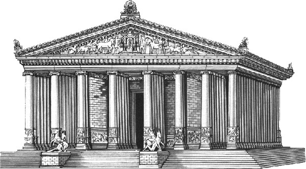
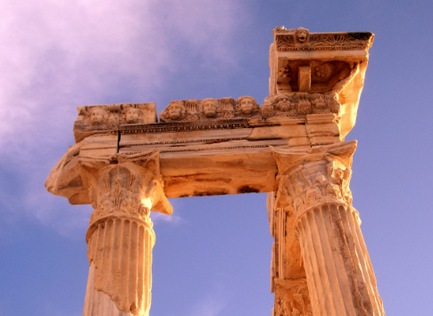
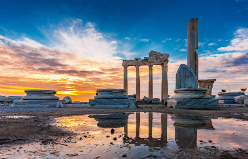
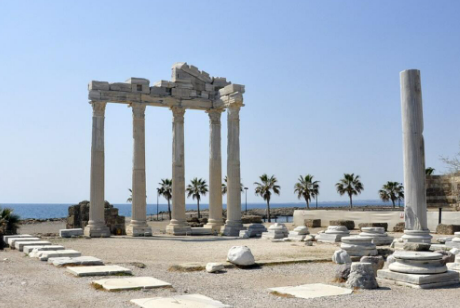

Tapınak üzerinde Korint başlıklı sütunlar bulunmaktadır.
Bizans bazilikasının tam ortasında kalan Apollon Tapınağı’nın bir kısmı bazilika yapımında kullanılmak için sökülür.

Roma düzeninde ve peripteros planına uygun biçimde yapılandırılan bu tapınağın
büyük sütunlarından bazıları restore edilip yerlerine konmuştur.
M.S 150 yıllarına dayanan tarihiyle Apollon Tapınağı, tarihi kalıntılarıyla gerçekten görülmeye değer bir mirastır.

Apollon (Latince:Apollo), mitolojide müziğin, sanatların, güneşin, ateşin ve şiirin tanrısıdır.
Ayrıca kehanet yapan, bilici tanrıdır.Aynı zamanda kahinlik yeteneğini diğer insanlarada transfer edebilir (Kassandra).
Zeus ve Leto’nun oğlu, Artemis’in ikiz kardeşidir. Ayrıca adı değişmeden, Roma mitolojisine geçen tek tanrıdır.

Altın bir lir çalar ( Bu lir düşüncesi Hermes’in tanrısal gücüyle ikiye ayırdığı inek bağırsağını,
kaplumbağa kabuğuna bağlamasıdır. ) ve Müzler korosunun başıdır. Gümüş yayıyla oku en uzağa o atabilir; okların tanrısıdır.
Tıbbı insanlara o öğretmiştir; hekimliğin tanrısıdır. Asla yalan söylemez; ışığın ve gerçeğin tanrısıdır.
Kutsal ağacı defne, hayvanları yunus, atmaca, kuğu ve kargadır. Lakapları “okçu”, “Likya’lı” ve Latince’de
yırtıcı kuşlara ilişkin olarak kullanılan, “yırtıcı” anlamına gelen “Vulturus”dur. Olymposluları altın liriyle eğlendiren,
çok uzaklara ok atabilen, hastaları iyileştiren, iyileştirme sanatını hastalara ilk öğreten gümüş yayın efendisi okçu Tanrı olarak
Yunan şiirlerine geçmiştir. Aynı güneş ışınları gibi Apollon’un okları da hem hasta edici hem de iyileştiricidir.
Her ne kadar ışıkla özdeşmeşmiş ise de, ilk ortaya çıktığında Apollon, güneş tanrısı değildir. Asıl yunan güneş tanrısı Helios’dur.
Apollon ve Artemis’in, güneş-ay ile özdeşleşmesi daha sonradan gerçekleşmiş, özellikle Romalılar döneminde bu anlayış kuvvetlenmiştir.